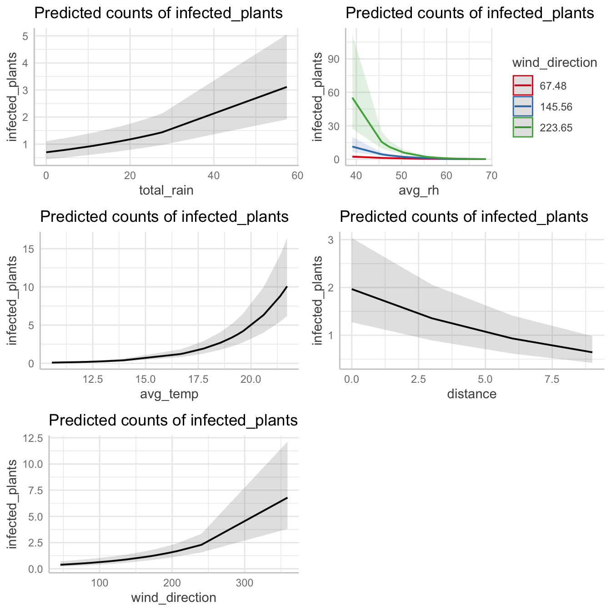
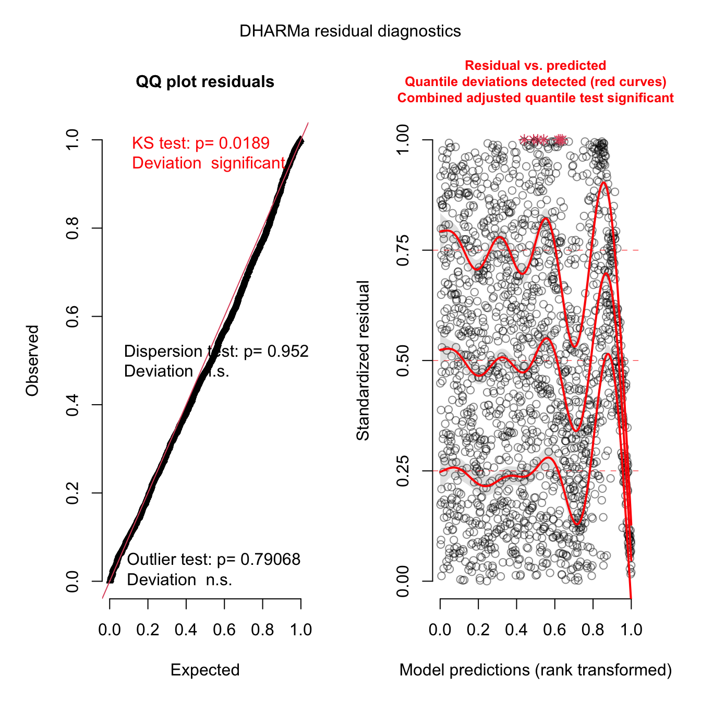
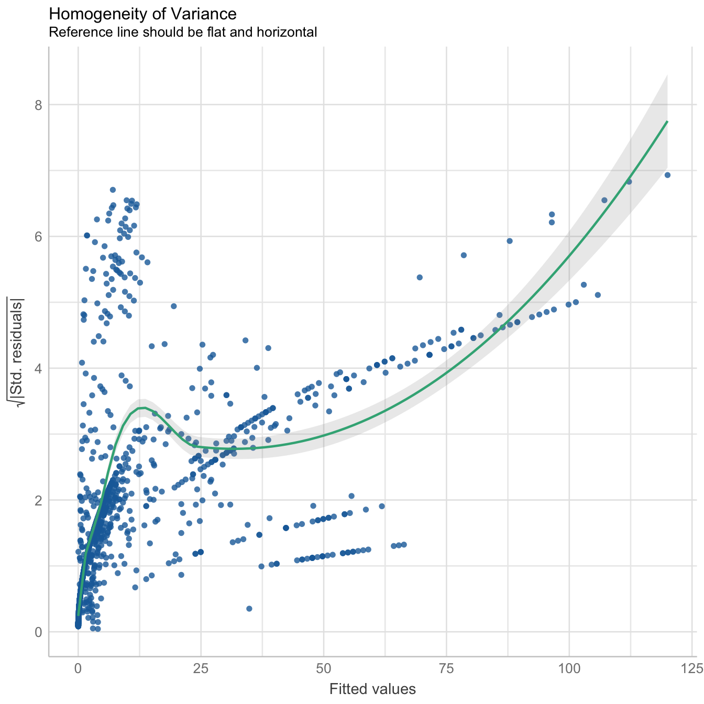
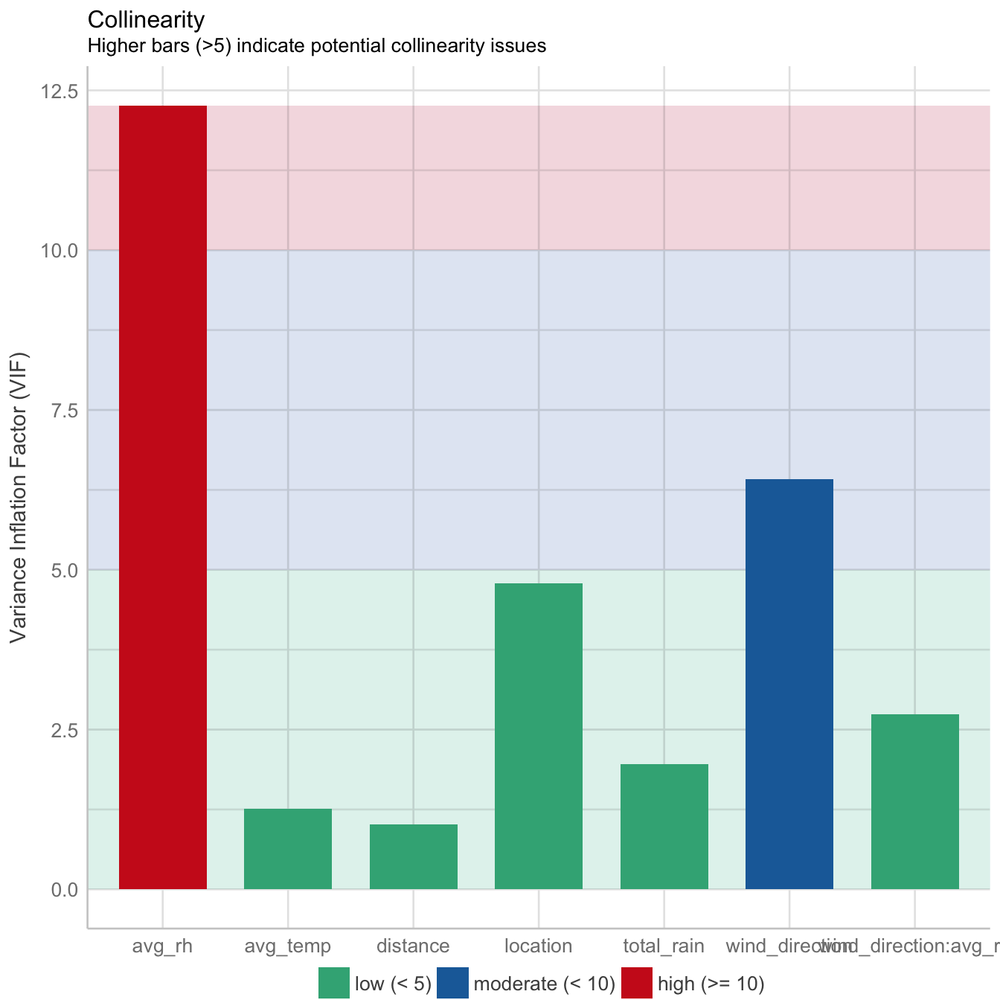
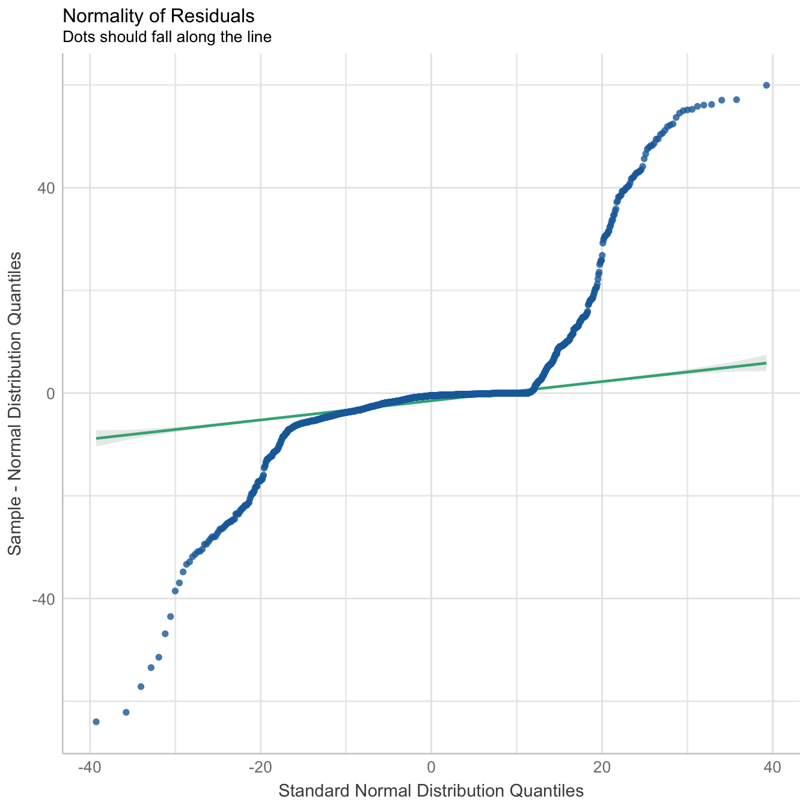
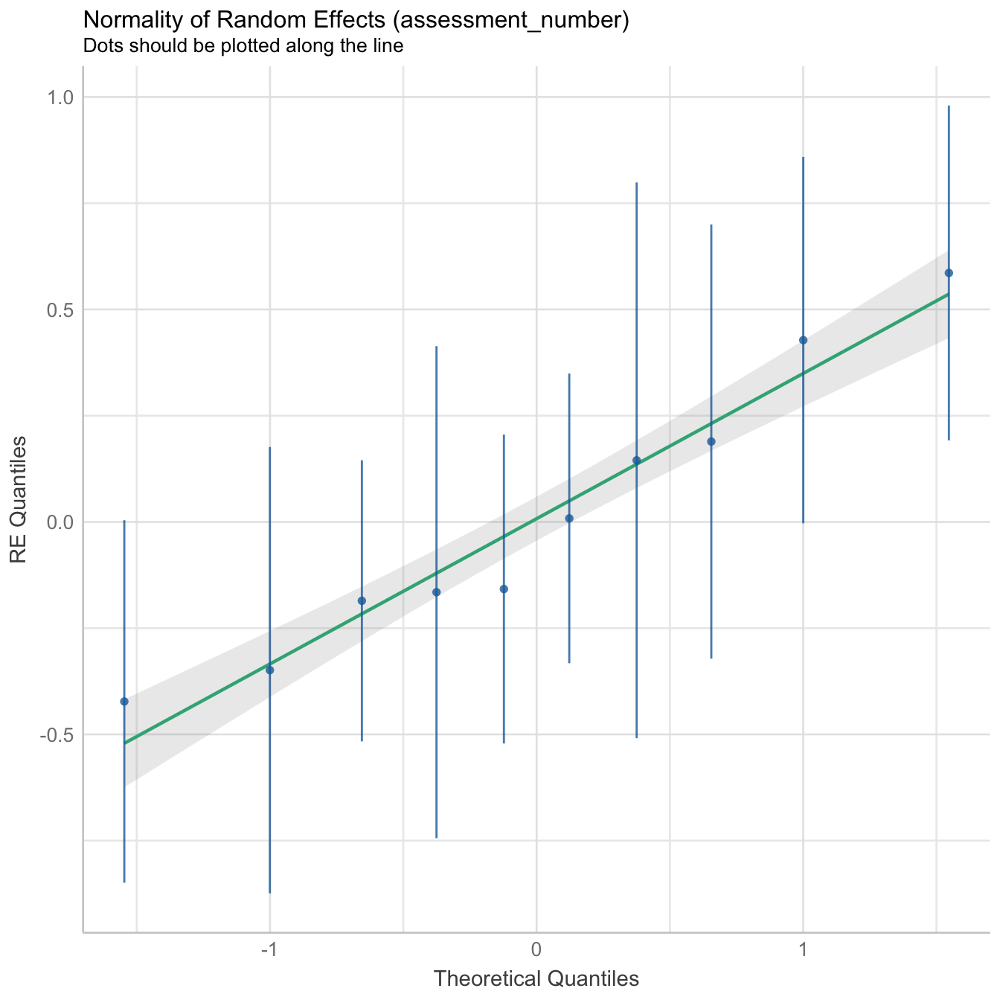
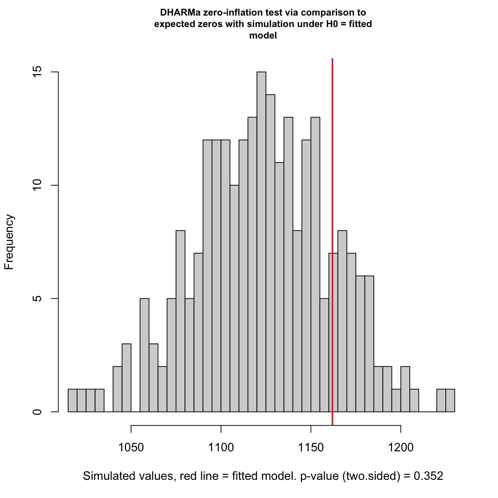

a02_Fit_GLMMs.Rmd
library("readxl")
library("tidyverse")
library("lubridate")
library("spatiotemporaldynamics")
library("SDMTools")
library("glmmTMB")
library("DHARMa")
library("gridExtra")
library("ggpubr")
library("here")
library("ggeffects")
### import spatiotemporal spread data
dat <-
read_excel(
system.file("extdata", "SpatioTemporalSpreadData_N.xlsx",
package = "spatiotemporaldynamics"),
sheet = 1
)
summary(dat)## location assessment_date assessment_number
## Length:1800 Min. :2020-07-02 00:00:00 Min. : 1.000
## Class :character 1st Qu.:2020-08-13 00:00:00 1st Qu.: 3.000
## Mode :character Median :2020-09-10 00:00:00 Median : 5.000
## Mean :2020-09-08 21:20:00 Mean : 5.056
## 3rd Qu.:2020-10-09 00:00:00 3rd Qu.: 7.000
## Max. :2020-11-05 00:00:00 Max. :10.000
## plot_number distance quadrat direction
## Min. :1.00 Min. :0.00 Length:1800 Length:1800
## 1st Qu.:1.75 1st Qu.:3.00 Class :character Class :character
## Median :2.50 Median :6.00 Mode :character Mode :character
## Mean :2.50 Mean :5.76
## 3rd Qu.:3.25 3rd Qu.:9.00
## Max. :4.00 Max. :9.00
## infected_plants total_plants incidence min_temp
## Min. : 0.000 Min. :16.00 Min. : 0.00 Min. : 2.943
## 1st Qu.: 0.000 1st Qu.:36.00 1st Qu.: 0.00 1st Qu.: 4.421
## Median : 0.000 Median :44.00 Median : 0.00 Median : 7.633
## Mean : 8.672 Mean :43.53 Mean : 19.30 Mean : 8.052
## 3rd Qu.: 4.000 3rd Qu.:51.00 3rd Qu.: 11.51 3rd Qu.:11.350
## Max. :74.000 Max. :74.00 Max. :100.00 Max. :15.580
## max_temp avg_temp avg_wind_speed total_rain
## Min. :18.19 Min. :10.57 Min. :1.524 Min. : 0.00
## 1st Qu.:19.98 1st Qu.:12.16 1st Qu.:1.752 1st Qu.: 1.00
## Median :25.81 Median :16.72 Median :2.468 Median : 4.80
## Mean :24.13 Mean :16.09 Mean :2.506 Mean :12.16
## 3rd Qu.:27.47 3rd Qu.:19.35 3rd Qu.:3.024 3rd Qu.:20.80
## Max. :29.24 Max. :21.71 Max. :3.507 Max. :57.40
## min_rh max_rh avg_rh
## Min. :14.57 Min. :63.64 Min. :39.11
## 1st Qu.:25.69 1st Qu.:75.38 1st Qu.:50.54
## Median :34.60 Median :81.25 Median :58.70
## Mean :31.88 Mean :80.59 Mean :56.23
## 3rd Qu.:36.92 3rd Qu.:85.93 3rd Qu.:60.81
## Max. :47.56 Max. :89.81 Max. :68.69
wind <-
read_excel(
system.file("extdata", "DailyWindDirectionData.xlsx",
package = "spatiotemporaldynamics"),
sheet = 1
)
summary(wind)## date location assessment_number
## Length:247 Length:247 Min. : 1.000
## Class :character Class :character 1st Qu.: 3.000
## Mode :character Mode :character Median : 5.000
## Mean : 4.798
## 3rd Qu.: 7.000
## Max. :10.000
## daily_avg_wind_direction
## Length:247
## Class :character
## Mode :character
##
##
## Wind direction for the Billa Billa site is the character format recorded as the text value of the wind direction. We need to convert it to degrees for calculations and then calculate the fortnightly average wind direction for use in the GLMMs.
wind <-
wind %>%
mutate(wind_degrees = as.numeric(
case_when(
daily_avg_wind_direction == "N" ~ "0",
daily_avg_wind_direction == "NbE" ~ "11.25",
daily_avg_wind_direction == "NNE" ~ "22.5",
daily_avg_wind_direction == "NEbN" ~ "33.75",
daily_avg_wind_direction == "NE" ~ "45",
daily_avg_wind_direction == "NEbE" ~ "56.25",
daily_avg_wind_direction == "ENE" ~ "67.5",
daily_avg_wind_direction == "EbN" ~ "73.5",
daily_avg_wind_direction == "E" ~ "90",
daily_avg_wind_direction == "EbS" ~ "101.2",
daily_avg_wind_direction == "ESE" ~ "112.5",
daily_avg_wind_direction == "SEbE" ~ "123.8",
daily_avg_wind_direction == "SE" ~ "135.1",
daily_avg_wind_direction == "SEbS" ~ "146.3",
daily_avg_wind_direction == "SSE" ~ "157.6",
daily_avg_wind_direction == "SbE" ~ "168.8",
daily_avg_wind_direction == "S" ~ "180",
daily_avg_wind_direction == "SbW" ~ "191.2",
daily_avg_wind_direction == "SSW" ~ "202.5",
daily_avg_wind_direction == "SWbS" ~ "213.8",
daily_avg_wind_direction == "SW" ~ "225",
daily_avg_wind_direction == "SWbW" ~ "236.2",
daily_avg_wind_direction == "WSW" ~ "247.5",
daily_avg_wind_direction == "WbS" ~ "258.8",
daily_avg_wind_direction == "W" ~ "270",
daily_avg_wind_direction == "WbN" ~ "281.2",
daily_avg_wind_direction == "WNW" ~ "292.5",
daily_avg_wind_direction == "NWbW" ~ "303.8",
daily_avg_wind_direction == "NW" ~ "315",
daily_avg_wind_direction == "NWbN" ~ "326.2",
daily_avg_wind_direction == "NNW" ~ "337.5",
daily_avg_wind_direction == "NbW" ~ "348.8",
TRUE ~ daily_avg_wind_direction
)
)) %>%
group_by(location, assessment_number) %>%
summarise(wind_direction = circular.averaging(wind_degrees))Left-join the wind and disease data for analysis in the GLMMs.
This is required to determine whether quadrats located in particular direction around the primary infection foci has a significantly faster disease progress rates, which in turn will inform us about directional disease spread by wind direction
dat <-
unite(dat, quadrat_direc, c(location, direction), remove = FALSE)
str(dat)## tibble [1,800 × 20] (S3: tbl_df/tbl/data.frame)
## $ quadrat_direc : chr [1:1800] "Billa Billa_All" "Billa Billa_North" "Billa Billa_NorthEast" "Billa Billa_East" ...
## $ location : chr [1:1800] "Billa Billa" "Billa Billa" "Billa Billa" "Billa Billa" ...
## $ assessment_date : POSIXct[1:1800], format: "2020-07-02" "2020-07-02" ...
## $ assessment_number: num [1:1800] 1 1 1 1 1 1 1 1 1 1 ...
## $ plot_number : num [1:1800] 1 1 1 1 1 1 1 1 1 1 ...
## $ distance : num [1:1800] 0 9 9 9 9 9 9 9 9 6 ...
## $ quadrat : chr [1:1800] "F" "N9" "NE9" "E9" ...
## $ direction : chr [1:1800] "All" "North" "NorthEast" "East" ...
## $ infected_plants : num [1:1800] 0 0 0 0 0 0 0 0 0 0 ...
## $ total_plants : num [1:1800] 36 48 27 57 53 41 39 31 36 54 ...
## $ incidence : num [1:1800] 0 0 0 0 0 0 0 0 0 0 ...
## $ min_temp : num [1:1800] 3.99 3.99 3.99 3.99 3.99 ...
## $ max_temp : num [1:1800] 20 20 20 20 20 ...
## $ avg_temp : num [1:1800] 12 12 12 12 12 ...
## $ avg_wind_speed : num [1:1800] 1.52 1.52 1.52 1.52 1.52 ...
## $ total_rain : num [1:1800] 1 1 1 1 1 1 1 1 1 1 ...
## $ min_rh : num [1:1800] 35.2 35.2 35.2 35.2 35.2 ...
## $ max_rh : num [1:1800] 82.7 82.7 82.7 82.7 82.7 ...
## $ avg_rh : num [1:1800] 58.9 58.9 58.9 58.9 58.9 ...
## $ wind_direction : num [1:1800] 88.5 88.5 88.5 88.5 88.5 ...
sapply(dat, class)## $quadrat_direc
## [1] "factor"
##
## $location
## [1] "factor"
##
## $assessment_date
## [1] "POSIXct" "POSIXt"
##
## $assessment_number
## [1] "factor"
##
## $plot_number
## [1] "numeric"
##
## $distance
## [1] "numeric"
##
## $quadrat
## [1] "factor"
##
## $direction
## [1] "factor"
##
## $infected_plants
## [1] "integer"
##
## $total_plants
## [1] "integer"
##
## $incidence
## [1] "numeric"
##
## $min_temp
## [1] "numeric"
##
## $max_temp
## [1] "numeric"
##
## $avg_temp
## [1] "numeric"
##
## $avg_wind_speed
## [1] "numeric"
##
## $total_rain
## [1] "numeric"
##
## $min_rh
## [1] "numeric"
##
## $max_rh
## [1] "numeric"
##
## $avg_rh
## [1] "numeric"
##
## $wind_direction
## [1] "numeric"
set.seed(42)Use glmms to include different assessment dates/assessment numbers as random effects since they were not independent. That is, disease assessment conducted at a later assessment date was dependent on the amount of disease present in the former assessment date. Density plots show the data is over-dispersed. It should be noted that over-dispersion is due to excess zeros, especially at the beginning, which in turn is attributed to low level of inoculum/rain. That is, excess zeros explains biological phenomena, and we don’t want to control for over-dispersion. Rather we are interested in making inferences about over-dispersion as a component of ecological process. The use of quasipoisson family, which fits an extra parameter that allows variance is greater than mean, allows to make such inferences
mod1 <-
glmmTMB(
infected_plants ~ total_rain + avg_rh + avg_temp + avg_wind_speed + distance + location + (1 |assessment_number) + offset(log(total_plants)),
family = nbinom1,
data = dat
)
summary(mod1)## Family: nbinom1 ( log )
## Formula:
## infected_plants ~ total_rain + avg_rh + avg_temp + avg_wind_speed +
## distance + location + (1 | assessment_number) + offset(log(total_plants))
## Data: dat
##
## AIC BIC logLik deviance df.resid
## 6006.3 6055.8 -2994.1 5988.3 1791
##
## Random effects:
##
## Conditional model:
## Groups Name Variance Std.Dev.
## assessment_number (Intercept) 0.5217 0.7223
## Number of obs: 1800, groups: assessment_number, 10
##
## Dispersion parameter for nbinom1 family (): 17.8
##
## Conditional model:
## Estimate Std. Error z value Pr(>|z|)
## (Intercept) -8.185745 2.339532 -3.499 0.000467 ***
## total_rain 0.036044 0.006726 5.359 8.38e-08 ***
## avg_rh -0.053244 0.030215 -1.762 0.078040 .
## avg_temp 0.245412 0.064261 3.819 0.000134 ***
## avg_wind_speed 1.793736 0.765363 2.344 0.019097 *
## distance -0.121322 0.011881 -10.212 < 2e-16 ***
## locationTosari -0.706097 1.013913 -0.696 0.486174
## ---
## Signif. codes: 0 '***' 0.001 '**' 0.01 '*' 0.05 '.' 0.1 ' ' 1The predictor quadrat_direc had to be dropped from the model because the model failed to converge. There is not enough data for the mixed model to include all predictors.
Estimate for Tosari is negative and relative humidity has a negative effect, which doesn’t make any biological sense. This means that an important predictor is missing. Try interaction between wind direction and relative humidity
mod2 <-
glmmTMB(
infected_plants ~ total_rain + avg_rh + wind_direction + avg_rh * wind_direction + avg_wind_speed + avg_temp + distance + location +
(1 | assessment_number) + offset(log(total_plants)),
family = nbinom1,
data = dat
)## Warning in (function (start, objective, gradient = NULL, hessian = NULL, : NA/
## NaN function evaluation
## Warning in (function (start, objective, gradient = NULL, hessian = NULL, : NA/
## NaN function evaluation
## Warning in (function (start, objective, gradient = NULL, hessian = NULL, : NA/
## NaN function evaluation
summary(mod2)## Family: nbinom1 ( log )
## Formula:
## infected_plants ~ total_rain + avg_rh + wind_direction + avg_rh *
## wind_direction + avg_wind_speed + avg_temp + distance + location +
## (1 | assessment_number) + offset(log(total_plants))
## Data: dat
##
## AIC BIC logLik deviance df.resid
## 5995.8 6056.3 -2986.9 5973.8 1789
##
## Random effects:
##
## Conditional model:
## Groups Name Variance Std.Dev.
## assessment_number (Intercept) 0.1146 0.3385
## Number of obs: 1800, groups: assessment_number, 10
##
## Dispersion parameter for nbinom1 family (): 17.7
##
## Conditional model:
## Estimate Std. Error z value Pr(>|z|)
## (Intercept) -8.2713695 2.4201991 -3.418 0.000632 ***
## total_rain 0.0258358 0.0055283 4.673 2.96e-06 ***
## avg_rh -0.0566833 0.0419450 -1.351 0.176576
## wind_direction 0.0476796 0.0162605 2.932 0.003365 **
## avg_wind_speed -0.3278659 0.7843401 -0.418 0.675936
## avg_temp 0.4517809 0.0677108 6.672 2.52e-11 ***
## distance -0.1210635 0.0118714 -10.198 < 2e-16 ***
## locationTosari 1.7025641 0.9816155 1.734 0.082838 .
## avg_rh:wind_direction -0.0006676 0.0002812 -2.374 0.017579 *
## ---
## Signif. codes: 0 '***' 0.001 '**' 0.01 '*' 0.05 '.' 0.1 ' ' 1It can be seen that significant negative effect of relative humidity has been removed with a significant negative interaction between wind speed and wind direction
Remove wind speed due to its very p-large value
mod3 <-
glmmTMB(
infected_plants ~ total_rain + wind_direction + avg_rh * wind_direction + avg_temp + distance + location + (1 | assessment_number) + offset(log(total_plants)),
family = nbinom1,
data = dat
)## Warning in (function (start, objective, gradient = NULL, hessian = NULL, : NA/
## NaN function evaluation
## Warning in (function (start, objective, gradient = NULL, hessian = NULL, : NA/
## NaN function evaluation
## Warning in (function (start, objective, gradient = NULL, hessian = NULL, : NA/
## NaN function evaluation
summary(mod3)## Family: nbinom1 ( log )
## Formula:
## infected_plants ~ total_rain + wind_direction + avg_rh * wind_direction +
## avg_temp + distance + location + (1 | assessment_number) +
## offset(log(total_plants))
## Data: dat
##
## AIC BIC logLik deviance df.resid
## 5994 6049 -2987 5974 1790
##
## Random effects:
##
## Conditional model:
## Groups Name Variance Std.Dev.
## assessment_number (Intercept) 0.1206 0.3473
## Number of obs: 1800, groups: assessment_number, 10
##
## Dispersion parameter for nbinom1 family (): 17.7
##
## Conditional model:
## Estimate Std. Error z value Pr(>|z|)
## (Intercept) -8.7572435 2.1071427 -4.156 3.24e-05 ***
## total_rain 0.0266117 0.0052455 5.073 3.91e-07 ***
## wind_direction 0.0462245 0.0158854 2.910 0.00362 **
## avg_rh -0.0502772 0.0387946 -1.296 0.19498
## avg_temp 0.4268845 0.0321457 13.280 < 2e-16 ***
## distance -0.1210855 0.0118713 -10.200 < 2e-16 ***
## locationTosari 1.3116098 0.2822845 4.646 3.38e-06 ***
## wind_direction:avg_rh -0.0006571 0.0002800 -2.347 0.01894 *
## ---
## Signif. codes: 0 '***' 0.001 '**' 0.01 '*' 0.05 '.' 0.1 ' ' 1
anova(mod1, mod2, mod3)## Data: dat
## Models:
## mod1: infected_plants ~ total_rain + avg_rh + avg_temp + avg_wind_speed + , zi=~0, disp=~1
## mod1: distance + location + (1 | assessment_number) + offset(log(total_plants)), zi=~0, disp=~1
## mod3: infected_plants ~ total_rain + wind_direction + avg_rh * wind_direction + , zi=~0, disp=~1
## mod3: avg_temp + distance + location + (1 | assessment_number) + , zi=~0, disp=~1
## mod3: offset(log(total_plants)), zi=~0, disp=~1
## mod2: infected_plants ~ total_rain + avg_rh + wind_direction + avg_rh * , zi=~0, disp=~1
## mod2: wind_direction + avg_wind_speed + avg_temp + distance + location + , zi=~0, disp=~1
## mod2: (1 | assessment_number) + offset(log(total_plants)), zi=~0, disp=~1
## Df AIC BIC logLik deviance Chisq Chi Df Pr(>Chisq)
## mod1 9 6006.3 6055.8 -2994.2 5988.3
## mod3 10 5994.0 6049.0 -2987.0 5974.0 14.2728 1 0.0001581 ***
## mod2 11 5995.8 6056.3 -2986.9 5973.8 0.1723 1 0.6780770
## ---
## Signif. codes: 0 '***' 0.001 '**' 0.01 '*' 0.05 '.' 0.1 ' ' 1Mod3 explains significant variations.
Remove offset to make prediction for the current number of plants. Retaining them result in very low y-axis values
both_mod3 <-
glmmTMB(
infected_plants ~ total_rain + wind_direction + avg_rh * wind_direction + avg_temp + distance + location + (1 | assessment_number),
family = nbinom1,
data = dat
)
summary(both_mod3)## Family: nbinom1 ( log )
## Formula:
## infected_plants ~ total_rain + wind_direction + avg_rh * wind_direction +
## avg_temp + distance + location + (1 | assessment_number)
## Data: dat
##
## AIC BIC logLik deviance df.resid
## 6048.1 6103.0 -3014.0 6028.1 1790
##
## Random effects:
##
## Conditional model:
## Groups Name Variance Std.Dev.
## assessment_number (Intercept) 0.1024 0.32
## Number of obs: 1800, groups: assessment_number, 10
##
## Dispersion parameter for nbinom1 family (): 19.9
##
## Conditional model:
## Estimate Std. Error z value Pr(>|z|)
## (Intercept) -4.8652202 2.0375264 -2.388 0.01695 *
## total_rain 0.0259736 0.0050761 5.117 3.11e-07 ***
## wind_direction 0.0454646 0.0154196 2.949 0.00319 **
## avg_rh -0.0503654 0.0376683 -1.337 0.18120
## avg_temp 0.4179769 0.0306028 13.658 < 2e-16 ***
## distance -0.1241880 0.0123742 -10.036 < 2e-16 ***
## locationTosari 1.5613457 0.2765233 5.646 1.64e-08 ***
## wind_direction:avg_rh -0.0006457 0.0002712 -2.381 0.01729 *
## ---
## Signif. codes: 0 '***' 0.001 '**' 0.01 '*' 0.05 '.' 0.1 ' ' 1Make plots for individual predictors and combine them using gridExtra package
f1 <- plot(ggpredict(both_mod3 , "total_rain"))
f2 <- plot(ggpredict(both_mod3 , c("avg_rh", "wind_direction")))
f3 <- plot(ggpredict(both_mod3 , "avg_temp"))
f4 <- plot(ggpredict(both_mod3, "distance"))
f5 <- plot(ggpredict(both_mod3, "wind_direction"))
fig_5 <- grid.arrange(f1, f2, f3, f4, f5)
fig_5## TableGrob (3 x 2) "arrange": 5 grobs
## z cells name grob
## 1 1 (1-1,1-1) arrange gtable[layout]
## 2 2 (1-1,2-2) arrange gtable[layout]
## 3 3 (2-2,1-1) arrange gtable[layout]
## 4 4 (2-2,2-2) arrange gtable[layout]
## 5 5 (3-3,1-1) arrange gtable[layout]
simulateResiduals(mod3, plot = T, quantreg=T)
## Object of Class DHARMa with simulated residuals based on 250 simulations with refit = FALSE . See ?DHARMa::simulateResiduals for help.
##
## Scaled residual values: 0.07218306 0.6503369 0.8940689 0.1368317 0.758629 0.2132113 0.7425183 0.1585707 0.1243184 0.2005616 0.1686062 0.8710129 0.07444707 0.364408 0.2818884 0.2019707 0.6495531 0.3774864 0.3617681 0.6932231 ...Significant DHARMa tests alert indicate that there COULD be a problem. A likely reason could be the large number of observations (n=1800). DHARMa tests are usually significant for the last number of observations because some deviations from observations are inevitable in a large scale study. It might also be possible that an important predictors is missing. The weather station used in this study didn’t record dew points. Future studies should aim to include dew points as a predictor.
performance::check_model(mod3, panel = FALSE)
There is moderate collinearity between relative humidity and wind direction, but since both are not directly related, both predictors have been included in the model. Here is the reference
performance::check_heteroscedasticity(mod3)## NULLNo heteroscedasticity detected
testZeroInflation(mod3)
##
## DHARMa zero-inflation test via comparison to expected zeros with
## simulation under H0 = fitted model
##
## data: simulationOutput
## ratioObsSim = 1.0339, p-value = 0.352
## alternative hypothesis: two.sidedNo zero-inflation detected
## R version 4.1.0 (2021-05-18)
## Platform: x86_64-apple-darwin17.0 (64-bit)
## Running under: macOS Catalina 10.15.6
##
## Matrix products: default
## BLAS: /Library/Frameworks/R.framework/Versions/4.1/Resources/lib/libRblas.dylib
## LAPACK: /Library/Frameworks/R.framework/Versions/4.1/Resources/lib/libRlapack.dylib
##
## locale:
## [1] en_AU.UTF-8/en_AU.UTF-8/en_AU.UTF-8/C/en_AU.UTF-8/en_AU.UTF-8
##
## attached base packages:
## [1] stats graphics grDevices utils datasets methods base
##
## other attached packages:
## [1] ggeffects_1.1.0 here_1.0.1
## [3] ggpubr_0.4.0 gridExtra_2.3
## [5] DHARMa_0.4.2 glmmTMB_1.1.1
## [7] SDMTools_1.1-221 spatiotemporaldynamics_1.0.0
## [9] lubridate_1.7.10 forcats_0.5.1
## [11] stringr_1.4.0 dplyr_1.0.7
## [13] purrr_0.3.4 readr_1.4.0
## [15] tidyr_1.1.3 tibble_3.1.2
## [17] ggplot2_3.3.5 tidyverse_1.3.1
## [19] readxl_1.3.1
##
## loaded via a namespace (and not attached):
## [1] minqa_1.2.4 colorspace_2.0-2 ggsignif_0.6.2
## [4] ggridges_0.5.3 ellipsis_0.3.2 rio_0.5.27
## [7] sjlabelled_1.1.8 rprojroot_2.0.2 parameters_0.14.0
## [10] fs_1.5.0 rstudioapi_0.13 farver_2.1.0
## [13] fansi_0.5.0 xml2_1.3.2 codetools_0.2-18
## [16] splines_4.1.0 R.methodsS3_1.8.1 doParallel_1.0.16
## [19] robustbase_0.93-8 cachem_1.0.5 knitr_1.33
## [22] jsonlite_1.7.2 nloptr_1.2.2.2 broom_0.7.8
## [25] dbplyr_2.1.1 R.oo_1.24.0 effectsize_0.4.5
## [28] shiny_1.6.0 compiler_4.1.0 httr_1.4.2
## [31] backports_1.2.1 assertthat_0.2.1 Matrix_1.3-3
## [34] fastmap_1.1.0 cli_3.0.0 later_1.2.0
## [37] htmltools_0.5.1.1 tools_4.1.0 gtable_0.3.0
## [40] glue_1.4.2 Rcpp_1.0.6 carData_3.0-4
## [43] cellranger_1.1.0 jquerylib_0.1.4 pkgdown_1.6.1
## [46] vctrs_0.3.8 nlme_3.1-152 iterators_1.0.13
## [49] insight_0.14.2 xfun_0.24 openxlsx_4.2.4
## [52] lme4_1.1-27.1 rvest_1.0.0 mime_0.11
## [55] lifecycle_1.0.0 rstatix_0.7.0 DEoptimR_1.0-9
## [58] MASS_7.3-54 scales_1.1.1 promises_1.2.0.1
## [61] hms_1.1.0 parallel_4.1.0 qqplotr_0.0.5
## [64] TMB_1.7.20 yaml_2.2.1 curl_4.3.2
## [67] see_0.6.4 memoise_2.0.0 sass_0.4.0
## [70] stringi_1.6.2 bayestestR_0.10.0 highr_0.9
## [73] desc_1.3.0 gap_1.2.3-1 foreach_1.5.1
## [76] boot_1.3-28 zip_2.2.0 qgam_1.3.3
## [79] rlang_0.4.11 pkgconfig_2.0.3 evaluate_0.14
## [82] lattice_0.20-44 labeling_0.4.2 tidyselect_1.1.1
## [85] plyr_1.8.6 magrittr_2.0.1 R6_2.5.0
## [88] generics_0.1.0 DBI_1.1.1 mgcv_1.8-35
## [91] pillar_1.6.1 haven_2.4.1 foreign_0.8-81
## [94] withr_2.4.2 abind_1.4-5 performance_0.7.2
## [97] modelr_0.1.8 crayon_1.4.1 car_3.0-11
## [100] utf8_1.2.1 rmarkdown_2.9 grid_4.1.0
## [103] data.table_1.14.0 reprex_2.0.0 digest_0.6.27
## [106] xtable_1.8-4 httpuv_1.6.1 numDeriv_2016.8-1.1
## [109] R.utils_2.10.1 munsell_0.5.0 bslib_0.2.5.1